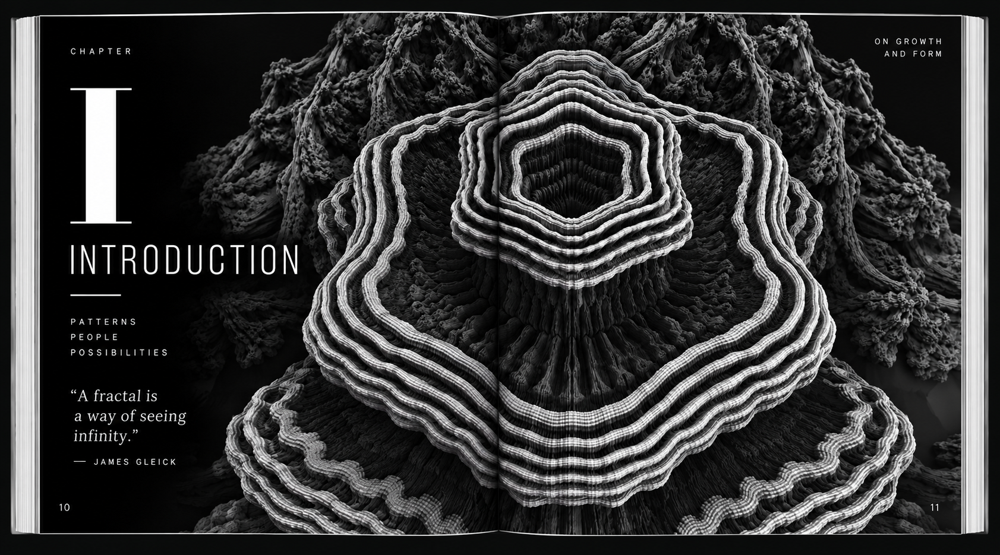
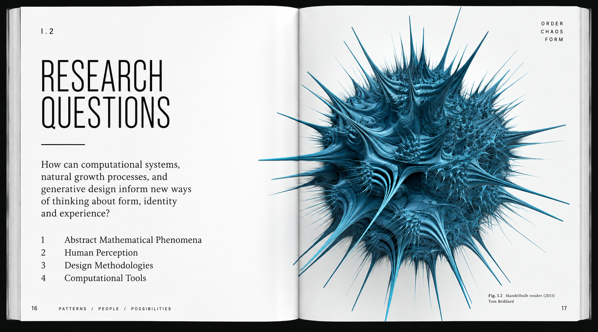
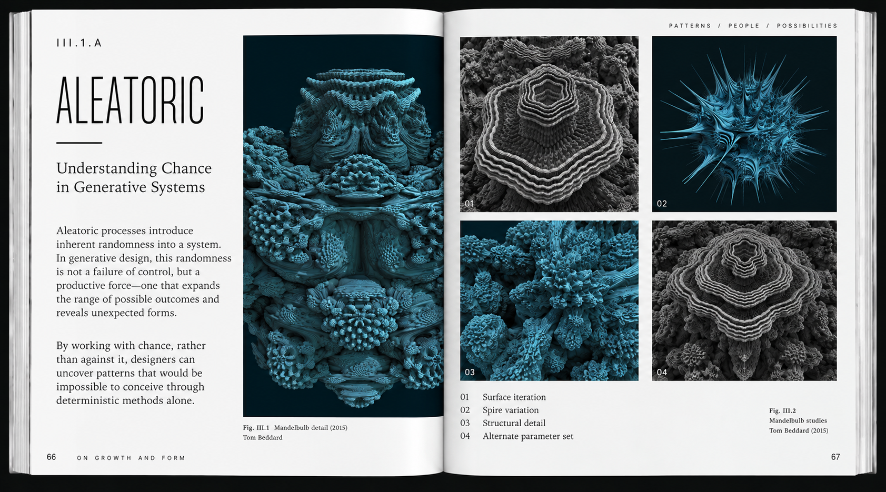
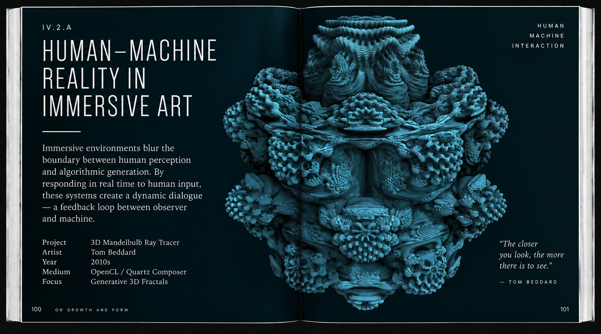
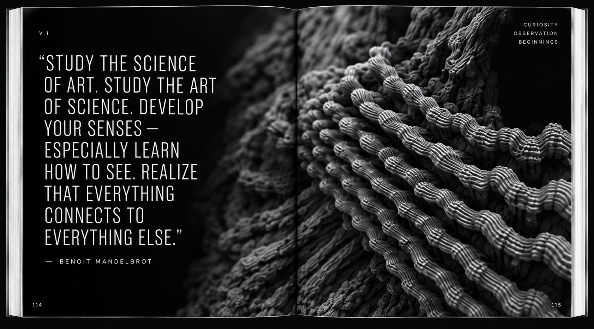
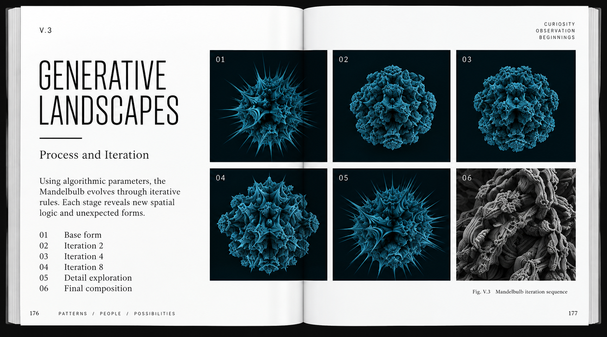

FEATURED PROJECT / EDITORIAL · BOOK DESIGN · TYPOGRAPHY
On Growth
and Form
A speculative book exploring the intersection of mathematics, nature, and generative systems. The project translates complex ideas about growth, chaos, and identity into a visual language that feels both scientific and poetic.





